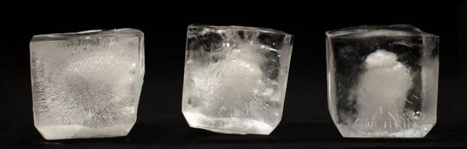
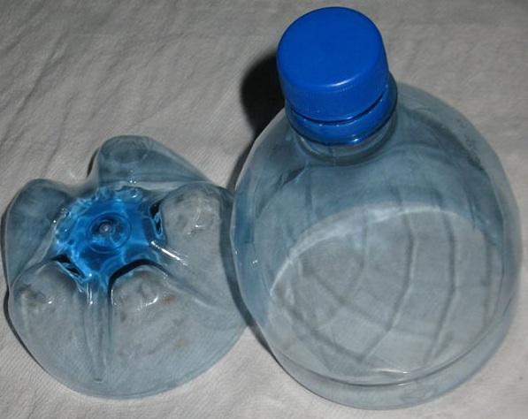

Z ktorej vody sa vyrába ľad. Ako vyrobiť ľad doma bez špeciálnych zariadení (mletého a drveného)
Pri každej príležitosti chcem prekvapiť hostí a pripraviť pokrmy, nápoje nielen chutné, ale aj krásne. A najjednoduchšou a najdostupnejšou možnosťou ich dekorácie je servírovať originálny ľad. Môže sa líšiť tvarom, farbou, veľkosťou, ale najdôležitejšou nuanciou v tak zdanlivo jednoduchej záležitosti je odobrať kvalitnú vodu a správne ju pripraviť. Potom bude poskytnutá krásna prezentácia jedla, nápoj bude k dispozícii - môžete ľahko prekvapiť hostí alebo len ľudí vo vašom okolí a oni vám ďakujú s nadšenými slovami vďačnosti. Ako urobiť priehľadný ľad doma ako v ktoromkoľvek bare? Zvážte nižšie uvedené možnosti.
Ako získať priehľadný ľad?
V skutočnosti je všetko jednoduché - bežná fyzika:
- Ak v mrazenej vode nie sú vzduchové bubliny, bude to priehľadné.
- Ak je vo vode veľa bublín, po zamrznutí sa zakalí.
Prečo sa to deje? Pri zamrznutí tekutina tuhne nerovnomerne a začína od okraja. Preto voda po vrstve akumuluje všetok vzduch v strede. A keď sa vzduch nemá kam dostať von a centrum začne zamrznúť, objaví sa veľmi zablatený stred. Preto, aby bol ľad priehľadný, musíte z neho odstrániť vzduch. Existuje niekoľko možností.
Výrobník ľadu - profesionál
Vždy si môžete kúpiť špeciálne zariadenie na mraziacu vodu, ktoré sa používa vo väčšine barov. Pre výrobcov ľadu je dnes veľa možností - od jednoduchých domácich modelov až po veľké profesionálne modely.
Podstatou tohto zariadenia je, že voda v ňom stužuje vo vrstvách, čo nedáva vzduchu dovnútra dovnútra. Ale toto zariadenie je dosť drahé.
zábava a ak nepotrebujete veľa ľadu, môžete to urobiť improvizovanými prostriedkami.
Domáce spôsoby
Skúsení barmani presne vedia, ako vyrobiť priehľadný ľad doma, bez použitia špeciálneho vybavenia. Existuje niekoľko jednoduchých metód.
Metóda jedna
Pre túto možnosť budete musieť pripraviť:
- čistá voda prechádzajúca filtrom alebo kúpená v obchode, ale bez plynu;
- varnú nádobu, ako napríklad hrniec;
- formy na mrazenie.
Vytvorenie ľadu pomocou tejto metódy zahŕňa niekoľko krokov:
- Na čistenie prebytočných solí a suspenzií vody alebo na čistenie, ktoré už bolo vyčistené.
- Nalejte tekutinu do nádoby a varte.
- Ochladí sa na teplotu miestnosti.
- Znovu uvarte vodu - tým zostane viac vzduchu.
- Voda sa ochladí a prechádza cez filter.
- Nalejte vodu ochladenú na izbovú teplotu na formy a zmrazte.
Dôležité! Ľad získaný týmto spôsobom je transparentnejší ako zamrznutie bežnej vody.
Existuje tiež metóda, pri ktorej nemusíte vodu variť.
Druhá metóda
Na vytvorenie transparentného ľadu doma bez varu budete potrebovať:
- čistá voda (je lepšie ju niekoľkokrát filtrovať alebo kúpiť);
- veľká kapacita na zmrazenie;
- formy na ľad.
Čo robiť so všetkým týmto:
- Približne dva litre čistej vody sa zmrazia vo veľkej nádobe, po ktorej vyberú mrazenú hrudku (najjednoduchší spôsob je ponoriť misku do teplej vody a zapnúť ju na handričku nezanechávajúcu vlákna).
- Ďalej môžete ľad z okrajov odrezať niečím ostrým a postupne sa dostať do zablateného stredu, čo nie je potrebné. Existuje tiež možnosť, keď sa prostredný vzduch premyje vodou.
Ďalej sa razené nasekané kúsky opäť rozložia do formy, počkajte, kým sa neroztopí a znova sa nechajú zmraziť, kým sa neuvaria.
Metóda tri
Ak to funkcie mrazničky umožňujú, môžete použiť pomalé mrazenie. Za týmto účelom nastavte teplotu v komore na -1, počkajte, kým ju kamera nezachytí a pripravenú vodu vložte do mrazničky. V tomto prípade je lepšie zabaliť tieto formulácie do fólie.
Dôležité! Takéto zmrazenie trvá asi deň, ale potom všetok vzduch má čas úplne sa dostať z vody a ľad sa ukáže byť hladký a krásny.
Štvrtá metóda
Táto možnosť zahŕňa vytvorenie slaného prostredia. Najprv musíte pripraviť soľný roztok z mora alebo obyčajnej stolovej soli.
Kroky na vytvorenie priehľadného ľadu:
- Voda sa naleje do nádoby a pridá sa soľ - požadovaná koncentrácia roztoku sa dosiahne experimentálne, pretože podmienky mrazenia sú rôzne.
- Soľ by sa mala úplne rozpustiť vo vode.
- Potom sa kapacita vloží do mrazničky pri teplote -1 alebo -2 stupňov, ale nie nižšia.
- Po - mali by ste počkať asi desať minút, dať do formy soľného roztoku naplnené vodou.
- Takéto zmrazenie nastane asi 12 hodín.
Dôležité! Táto metóda sa považuje za najúčinnejšiu. Jeho výhodou je tiež to, že v mrazničke je možné neustále udržiavať slanú vodu a ľad podľa potreby zmraziť.
Vyššie uvedené metódy vám pomôžu pripraviť krištáľovo čistý a krásny ľad na nápoje bez bubliniek. A určite to nebude horšie ako v tých najlepších baroch. Ak nemáte po ruke ľadovú pleseň - nebojte sa, môžete ju urobiť aj samostatne, doma.
Vytváranie formy na ľad
Existuje veľa spôsobov, ako vyrobiť ľad bez plesne, všetko záleží na vašom
fantasy. Tu je niekoľko zaujímavých možností:
- Ak sa predpokladá, že nápoj sa bude konzumovať bez toho, aby sa miešal v zmesi alebo kokteile, potom existuje možnosť okamžitého zmrazenia vody v nádobe na podávanie nápojov. Zároveň by ste si mali uvedomiť, že riad by mal byť odolný proti extrémnym teplotám a kompresii chladom. Jeho steny musia byť tiež úplne suché. Pri takomto zmrazení sa na dno misiek naleje množstvo čistej vody a vloží sa do mrazničky na deň pri teplote nepresahujúcej dva stupne. Podávanie nápojov v priehľadnej miske je okrem potrebného chladenia tiež veľmi neobvyklé.
- Ak chcete zamrznúť vodu vo forme okrúhlych kúskov, môžete zobrať plastové poháre rôznych veľkostí. Voda musí byť vyliata iba na dno, vysoká 0,5 - 1 cm a zmrazená. Ak dno položíte na polovicu alebo 4 časti plastom, môžete získať ľad vo forme polovíc alebo štvrtín kruhu.
- Plastové uzávery fliaš alebo kovové uzávery sú tiež zaujímavou možnosťou, ktorá môže nahradiť okrúhle plechovky na ľad. Je pravda, že môžete mať ťažkosti s jej odstránením z veka.
- Ak ten istý ľad nie je potrebný, môžete použiť tanier najrôznejších sladkostí. Vyberte substráty, ktoré sa nekrčia ani netesnia. Výsledkom bude zaujímavá forma sladkostí.
- Existuje tiež možnosť použiť ako formu detský návrhár alebo pieskové formy. Nezabudnite pred použitím dôkladne opláchnuť, odmastiť a dezinfikovať akúkoľvek formu.
- Z bežného plastového vrecka sa dá ľahko zmraziť na formu. Stačí do nej naliať trochu vody, uviazať uzol, naliať viac vody, priviazať ďalší uzol atď., Až pokým sa taška nevyčerpá. Forma zmrazenia týmto spôsobom samozrejme nebude rovnomerná, ale ak budete dodržiavať pravidlá prípravy, bude zaručená transparentnosť a neprítomnosť bublín.
Na vytvorenie priehľadného ľadu a tvarov pre neho môžete použiť ktorúkoľvek z možností, ktoré sa vám páčia, alebo si vytvoriť svoju vlastnú.
Na prípravu priehľadného a čistého ľadu potrebujete veľmi málo, ale nezabudnite na ďalšie odporúčania:
- Voda absorbuje pachy dobre, takže pri varení dávajte pozor, aby sa v okolí nenachádzali žiadne voniace potraviny.
- Na zmrazenie môžete použiť aj termálny vak. Formuláre vložte do vrecka a vložte do mrazničky pri teplote asi mínus 8 stupňov. Voda bude zamrznutá opačným spôsobom, zhora nadol, čo znamená, že vzduch ju bude tiež opúšťať inak. Taký ľad môže byť zhora mierne zakalený, ale nie uprostred. Takže - ak v miske krátko necháte ľad pri izbovej teplote, bahnitá voda sa roztopí.
- Pri varení je lepšie brať riad z nehrdzavejúcej ocele. Hliníkové nádoby nie sú pre tento spôsob vhodné.
- Nalejte horúcu vodu do plastových foriem a do mrazničky nevkladajte nechladenú vodu. V opačnom prípade sa môže forma roztaviť a chladnička môže vytekať.
- Ak chcete prekvapiť hostí, pripravte ovocný ľad: porazte ovocie mixérom a pridajte do nich džús, cukor alebo sirup. Po - nalejte hmotu do foriem a zmrazte.
- Pri servírovaní ľadu bez nápojov by bolo najlepším riešením použiť špeciálny vedro - chladič.
- Je vhodnejšie zobrať si ľad s klieštikmi, aby sa neroztopil v predstihu.
„Ľad je dušou kokteilu,“ hovoria skúsení barmani. Akýkoľvek alkoholický nápoj s veľkým kúskom číreho ľadu bude chutnejší a nápoj bude esteticky príjemný. Koniec koncov, alkohol nie je iba „efektom“ ako procesom, atmosférou a komunikáciou.
VKontakte
spolužiaci
Priehľadný ľad
Všimli ste si niekedy, že ľad podávaný v reštauráciách je priehľadný a kocky, ktoré dostanete z foriem chladničky, sú zakalené a biele?
Ako vyrobiť priehľadný ľad doma? Neverte tomu, ak vám povedia, že stačí variť alebo filtrovať vodu. Nepomôže ani použitie destilovanej vody.

Faktom je, že bez ohľadu na to, ako sa pokúsite vyčistiť vodu od nečistôt, bude mať stále jednu zložku, ktorá sa líši od H2O. Toto je vzduch.
Mraziaca voda má vo svojej podstate tendenciu tvoriť číry kryštalickú štruktúru. Zároveň tlačí zachytený vzduch a nečistoty z mraziacej zóny.
V zásobníku na ľad sa tento proces vyskytuje na všetkých stranách kocky. Posledná časť, ktorá zamrzne, je stred, a to je to, čo sa stáva zakaleným a naplnené vzduchovými bublinami.
Potrebujeme absolútne priehľadný ľad? Aká je jeho výhoda oproti bežnému bahnitému ľadu zo silikónových foriem?
Po prvé, v dôsledku neprítomnosti vzduchových bublín sa transparentný ľad topí pomalšie ako obvykle, v dôsledku čoho vaše nápoje zostanú dlhšie chladné.
Po druhé, pretože transparentný ľad sa topí pomalšie, znamená to, že váš nápoj sa pomalšie riedi vodou a udrží si svoju bohatú chuť dlhšie.
Veľký kúsok čistého ľadu je sám o sebe kokteilovou dekoráciou. Obrovská priehľadná kocka ľadu vylisovaná do starej módy, doslova stláčajúca časť whisky alebo rumu, je v pohode.
Ako vyrobiť krištáľovo čistý ľad doma
Môžete si samozrejme kúpiť ten, ktorý produkuje veľmi čistý a priehľadný ľad, ale zaberá to slušné miesta v bare a stojí 15 000 rubľov.
Najlepším spôsobom, ako získať krištáľovo čisté kocky ľadu, je tzv. Smerové zmrazenie.
POTREBUJETE POTREBU
- malý prenosný chladič potravín
- nádrž na vodu, ktorá voľne vstúpi do chladničky automobilu
- filtrovaná voda
- nôž s dlhými zubami
NÁVOD
Zaujímavý fakt: gule majú najmenšiu povrchovú plochu v pomere k objemu, čo robí kúsky ľadu takými a nie kubickými tvarmi ideálnymi kandidátmi na chladenie nápojov.
Zdalo by sa, že by to mohlo byť jednoduchšie: naplňte formy vodou z vodovodu a vložte do mrazničky na pár hodín. Výsledkom je mliečna látka, ktorá má často nepríjemný zápach chlóru. Aby sa tomu zabránilo, zvážime správnu technológiu na výrobu ľadu doma vo forme priehľadných kociek alebo drvených kúskov. Z vybavenia potrebujete iba mrazničku, dokonca aj formy môžete nahradiť improvizovanými nádobami.
teória, Domáci ľad je zakalený v dôsledku plynov obsiahnutých vo vode (vrátane kyslíka), minerálnych solí a iných nečistôt. Plyny vytvárajú malé bubliny, ktoré po zmrazení tvoria príliš veľké kryštály. Podobným spôsobom pôsobia aj soli ťažkých kovov. Iba vyčistená odplynená voda s nízkou tvrdosťou poskytuje úplnú priehľadnosť.
Správne vyrobený ľad je nielen priehľadný, bezfarebný a bez chuti, ale topí sa aj o 30 až 50% dlhšie. V dôsledku toho je nápoj menej zriedený vodou.
Rozdiel medzi konvenčným mrazením a navrhovanou technológiou
prísada:
- voda (čistená alebo destilovaná) - 1 liter.
Priemerná strana potrebuje v závislosti od množstva a rozmanitosti nápojov 600 - 800 gramov ľadu na účastníka.
Recept na domácu zmrzlinu
1. Prejdite obyčajnú vodu z vodovodného systému alebo zo studne (studne) cez filter na čistenie, najlepšie s reverznou osmózou, pričom minerály a soli odstraňujte na maximum. Čím je voda tvrdšia, tým lepšie by malo byť čistenie. Ak filter neexistuje, je lepšie kúpiť balenú vodu pre deti, ktoré prešli dodatočným zmäkčením.
Ideálnou možnosťou je destilovaná voda, ktorú je možné kúpiť v lekárni alebo ju vyrobiť samostatne destiláciou obyčajnej vody na mesačnom svite akéhokoľvek dizajnu.
Rada. Dbajte na to, aby v mrazničke a ľadových plesňach nedošlo k zápachu. Napríklad nemôžete vyrábať ľad v oddelení, kde sa mäso alebo ryby skladujú v otvorenej podobe.
2. Nalejte pripravenú vodu do akejkoľvek čistej hliníkovej nádoby a privarte ju k varu. Vypnite teplo. Po 2-3 minútach zakryte.
3. Ochlaďte vodu na izbovú teplotu, potom ju nechajte znova zohriať, zakryte a ochladte na 20-25 ° C. Dvojitým varom sa zabezpečí odstránenie zvyškového kyslíka a iných plynov, čím sa ľad stane priehľadným.
4. Nalejte vodu do foriem, prikryte ju plastovou fóliou (najlepšie) a vložte do mrazničky. Ak neexistujú žiadne špeciálne formy, môžu byť nahradené jednorazovými pohárikmi alebo dnami z plastových fliaš.
 Spodok je vhodný pre kocky, v krku môžete zmraziť ľad na drvenie
Na uľahčenie pridávania kociek ľadu do pohára vám odporúčame naliať vodu do vrstvy nie vyššej ako 5-6 cm.
5. Čas mrazenia závisí od teploty v mrazničke a od objemu plesní. Ak je v strede kocky viditeľná bublina, ľad ešte nie je pripravený.
Na urýchlenie varenia môžete spočiatku zmraziť horúcu vodu bez toho, aby ste exponovaný povrch obalili filmom. Hlavná vec nie je roztaviť formovací materiál.
Ak chcete vyrobiť domáci ľad bez bubliniek vo vnútri, musíte zamrznúť vodu v niekoľkých prechodoch: najskôr nalejte iba na spodnú časť (vrstva 1 - 2 cm), po vytvrdnutí pridajte do polovice pleseň, nechajte niekoľko hodín v mrazničke, nalejte zvyšnú vodu a počkajte, kým nebude úplne zamrznutá. ,
6. Odstráňte hotové kocky z formy jemným ohnutím plastovej základne. Skladovateľnosť domáceho ľadu v mrazničke je neobmedzená.
Ako vyrobiť drvený ľad
7. Kocky získané v predchádzajúcom kroku zložte do silného plastového vrecka. Jemne rozdrvte ľad na požadovanú veľkosť kryštálu pomocou drevenej paličky alebo iného tupého kuchynského predmetu, napríklad valčeka. Štrajk hladko a nie príliš tvrdo, snažte sa neroztrhnúť vak.
Varovanie! Pred rozdrvením chráňte oči a tvár pred jednotlivými časticami ľadu.
Alternatívou je drviť kocky v kuchynskom robote alebo mixéri nastavením pulzačného režimu.
Pri manuálnom drvení je veľmi ľahké sa zraniť!
Ľad vykonáva niekoľko dôležitých funkcií v procese prípravy koktailu, ako napríklad: ochladzovanie servírovacieho pohára, vybavenie barov a prísad, ktoré tvoria kokteil, brúsenie štruktúry budúceho kokteilu, riedenie koktailu vodou počas procesu prípravy a nakoniec, ľad v mnohých kokteiloch je tiež ozdobou; ,
Na úsvite mojej imbiberovej kariéry som pripravoval ľad na kokteily v špeciálnych konzervách. A vždy som bol naštvaný, že ľad v nich sa ukázal byť nejako zablatený a nepriehľadný. Z tohto dôvodu trpel predovšetkým estetický vzhľad mojich pripravených kokteilov. Strčil som veľa internetových zdrojov, snažil som sa vyrobiť ľad z filtrovanej vody, z prevarenej a dokonca destilovanej vody. Niekoľkokrát zmrzol a rozmrazil vodu, vo všeobecnosti sa bavil, ako len dokázal. To však neposkytlo požadovaný výsledok.
Faktom je, že bez ohľadu na to, ako sa snažím čistiť vodu od nečistôt, stále má jednu zložku, ktorá sa líši od H20. Toto je vzduch. Je vždy prítomná vo vode vo väčšej alebo menšej miere a v procese zamŕzania sa koncentruje bližšie k stredu nádrže, spolu s rozpustenými soľami obsiahnutými vo vode, a nakoniec zamrzne. Nie je žiadnym tajomstvom, že voda v nádobe po zamrznutí začne tuhnúť od povrchu a zo strán nádoby a soli a vzduch sa koncentrujú v strede a nakoniec zamrznú. Z toho sa ukazuje v strede kocky ľadu, také belavé drepy.
Pri použití generátorov ľadu sa ľad nezmrazuje v kónických alebo štvorcových formách ľadu súčasne, ale postupne, ako keby vrstvenie na už zamrznutej predchádzajúcej vrstve ľadu. Okrem toho každá z tenkých vrstiev vody mrzne takmer okamžite. Výsledkom je veľmi čistý a priehľadný ľad. Generátor ľadu však stojí 15 000 rubľov a miesto v bare je slušné. Preto pre mňa to nebola alternatíva. Transparentný ľad, ako som chcel.
Výsledkom bolo, že po niekoľkých pokusoch s postupným nalievaním vody do foriem sa zmenili objemy mraziacej kvapaliny, prepichli ľad v priebehu mraziaceho procesu, aby sa vypustil vzduch a ďalšie veci, okrem iného som našiel spôsob, ako pripraviť úplne transparentný ľad doma bez väčšieho úsilia. , ktoré zdieľam nižšie, v nádeji, že niekto raz príde vhod:
- Najskôr musíte použiť iba filtrovanú vodu. Ak nemáte k dispozícii žiadny domáci filter, môžete použiť pitnú vodu z plastových fliaš, ale v žiadnom prípade vodu z vodovodu. Je v ňom príliš veľa nežiaducich nečistôt.
- Ďalej zbierame vodu v dostatočne veľkej nádobe s obsahom 2 - 3 litrov. Akákoľvek kovová misa urobí, ale musíte si zobrať hlbokú misku s výškou strany 10-15 centimetrov.
- Do mrazničky sme vložili nádobu s vodou (nádobu tiež zabalím do vrecka, aby na povrch vody z stropu mrazničky neklesol mráz. Okrem toho sa voda počas mrazu mierne odparí a tieto výpary sa prilepia dovnútra mrazničky, čím sa urýchli moment, keď sa mrazničku bude potrebné rozmraziť. Balenie tomuto procesu zabraňuje). Zapínali sme mrazničku na maximum. Mám to mínus 24 o C.
- Čakáme, až voda v nádrži úplne zamrzne.
- Výsledný ľad sa nám dostane z nádrže. Aby sme to dosiahli, pridáme nádobu studenou vodou. Áno, ľad praskne, ale to nebude mať vplyv na konečný výsledok.
- Dáme ľad do veľkého priestranného uteráka (najlepšie bez chĺpkov), zoberieme ľadovú tyčinku v jednej ruke (kto nemá taký nástroj po ruke, odporúčam použiť veľký skrutkovač Phillips) a na druhej strane hrany uteráka (by sa mala ukázať „vrecko“) a čip kúsky ľadu vo vzdialenosti asi 5 cm od stredu bloku ľadu v tvarovanej "kapse". Ak je to potrebné, rozdelte výsledné kúsky na menšie.
- Nalejte získané kúsky ľadu do koktailového pohára a vychutnajte si výsledok. Bude to úplne priehľadné, pretože všetka zákal (vzduch, soli a nečistoty) bude sústredený v strede bloku ľadu.
Chcel by som poznamenať, že takto získaný ľad bude určite beztvarý, často s ostrými nerovnými hranami a rohmi, ale keď sa na taký ľad naleje tekutina na pohár, prestane byť najmenej dôležitý, pretože ostré hrany sa vyhladzujú takmer okamžite pri kontakte s ďalším teplá tekutina podľa definície.
Ďalší bod: ľad by sa mal používať vždy čerstvý, nie starší ako 2 - 3 dni, pretože rýchlo opadáva, zakryje sa mrholením a opäť zakalí. V skutočnosti to nie je ani môj celý tajný spôsob, ako získať transparentný ľad.
Nedávno som úplne prešiel na rozdrvený ľad v servírovacom pohári a kocky ľadu používam z foriem iba v trepačke, miešacej nádobe a ochladil som ich pomocou tyčiniek.
A teraz vyzývam rusky hovoriace „koktailové spoločenstvo“, aby sa vyjadrilo o svojich vlastných spôsoboch a metódach a možno aj o tajných technikách práce s ľadom !!!
Za oknom stojí neznesiteľné teplo a sedíte doma a neviete, ako uhasiť smäd, aby bol čerstvý a príjemný? Existuje mnoho rôznych spôsobov, ale je oveľa lepšie variť najchutnejšie ovocné ľady doma. Je to jeden z najobľúbenejších chladiacich a ľahkých dezertov všetkých detí a dospelých, ktorý patrí do kategórie zmrzliny.
Prítomnosť veľkého výberu tejto pochúťky v supermarkete je jednoducho úžasná, ale pri nákupe musíte byť veľmi opatrní, pretože výrobcovia často do svojho zloženia pridávajú neškodné zložky, ako sú farbivá, príchute, látky na zvýraznenie chuti. Z takejto sladkosti určite nebude prínos, iba poškodenie tela a ďalšie centimetre v páse, pretože obsah kalórií je dosť veľký. Nie je potrebné sa napĺňať takou zbytočnou pochúťkou, ľahšie si pripravíte studený dezert vlastnými rukami.
Zmrzlina vyrobená vlastnou cestou vám pomôže nielen uniknúť z horúceho tepla, ale tiež nezaťaží telo nadmerným množstvom kalórií. Obsahuje veľa vitamínov a minerálov, pretože sú vyrobené z prírodných zložiek. V tomto článku vám povieme o chutných a zdravých receptoch na túto liečbu.
Aj dieťa môže doma vyrábať ovocný ľad. Ako prísady sú rovnako vhodné mrazené alebo čerstvé ovocie a bobule. Bez prírodných štiav sa nezaobídete. Aby bol dezert jasnejší, môžete použiť rôzne džúsy a ovocné pyré. Dezert by mal byť zmrazený v špeciálnych formách alebo v bežných plastových kelímkoch. Vhodné môžu byť formy ľadu dostupné v akejkoľvek chladničke aj jednorazové šálky. Ošetrenie môže byť vyrobené z niekoľkých vrstiev, aby sa získala farebná dúha chuti. Ak ste túto zmrzlinu urobili doma, môžete si ju s istotou zaobstarať so svojimi deťmi a známymi. Zapnite fantáziu a vytvorte si vlastné jedinečné recepty. A povieme vám naše jednoduché a originálne recepty.
Ovocný ľad "Paradise potešenie"
Môžete variť z mrazeného alebo čerstvého ovocia a bobúľ. Ak používate mrazené potraviny, musíte ich rozmraziť, umyť ich a nechať zvyšnú vodu uschnúť.
zloženie:
- jahody - 500 g;
- banán - 2 ks;
- pomarančový džús - 50 ml;
- práškový cukor - 25 g;
- mäta - 5 pobočiek.
Jahody, mäty a banány dobre umyte a osušte. Je lepšie použiť lístky mäty, odstrániť vetvičky. Jahody, mäta, ľadový cukor premiešajte v mixéri. Pripravenú hmotu usporiadajte do foriem, napĺňajte ich do polovice a vložte do mrazničky. Ošúpeme banány a nakrájame na malé kúsky. V mixéri porazte banány s pomarančovým džúsom. Keď jahodové pyré zamrznú, pridajte naň banán. Dajte späť do mrazu.
Ako pripraviť ovocnú ľadovú šťavu?
Mrazená šťava je najjednoduchší spôsob výroby ovocného ľadu. Zmrzlina s prísadou buničiny má veľmi príjemnú chuť. Na varenie musíte vziať svoju obľúbenú šťavu, naliať do foriem a umiestniť do mrazničky na 25 - 40 minút. Nepochybne bude zmrzlina vyrobená z čerstvo vylisovanej šťavy a vlastnými rukami jednoducho skvele chutiť. Ak na prípravu ľadu použijeme zakúpenú čistenú šťavu bez dužiny, dostaneme priehľadný sladký ľad.
Viacfarebný ovocný ľad s jogurtom „Berry's Tale“
Takýto farebný vzhľad zákusku je veľmi chutný a nezvyčajný vďaka pridaniu kyslého mlieka.
zloženie:
- pomarančový džús - 500 ml;
- práškový cukor - 125 g;
- jogurt - 130 ml;
- angrešt (alebo akékoľvek iné bobule) - 250 g;
- šťava z akéhokoľvek ovocia.
Liečba bude pozostávať z troch vrstiev. Nalejte ovocnú šťavu v 1/3 formy s prvou vrstvou. Odoslané na zmrazenie do 20 - 30 minút. Porazte miešacím jogurtom s pomarančovým džúsom, nalejte druhú vrstvu a vložte do mrazničky znova na 20-30 minút. egreše sú zmiešané s práškovým cukrom a nasekané mixérom. Získame tretiu vrstvu a mrazíme ďalších 20 - 30 minút v mrazničke.
Ovocný ľad pomocou cukrového sirupu „Cherry Queen“
 zloženie:
zloženie:
- čerstvá čerešňa - 500 g;
- čistená voda - 100 ml;
- cukor - 120 g.
Nalejte cukor na panvicu a nalejte vodu. Dajte na mierny ohrev a nechajte ho variť za stáleho miešania. Cukor sa musí úplne rozpustiť. Odstráňte hotový sirup zo sporáka. Mleté čerešne v mixéri. Ak sa cukrový sirup čiastočne ochladí, pridajte do neho čerešňovú penu. Všetko zmiešajte a nalejte do foriem. Odoslať do zmrazenia. Keď zmrzlina z čerešňového cukru zamrzne, vložte do nej vertikálne plastovú tyčinku a zmrazte až do konca.
Ovocný ľad „Solárna nálada“
Použitím týchto zložiek zmrzlina zmäkne. Najskôr je potrebné želatínu rozpustiť podľa pokynov na obale a potom pridať šťavu alebo pretlak z bobúľ.
zloženie:
- čistená voda - 420 ml;
- broskyňové alebo marhuľové pyré - 1 lyžica;
- želatína - 7 g;
- cukor - 250 g;
- citrónová šťava podľa chuti.
Najprv nalejte malé balenie želatíny vodou podľa pokynov na obale a nechajte ju napučať. Nalejte cukor do zvyšku vody, dajte panvicu na malý oheň a nechajte ju variť za stáleho miešania. Potom pridajte napučanú želatínu, počkajte, kým sa úplne nerozpustí, a vyberte ju z tepla. Keď sirup mierne vychladol, pridajte doň ovocné pyré a citrónovú šťavu. Do horúceho sirupu by ste nemali pridávať šťouchané zemiaky, pretože ničíte vitamíny. Hmota, ktorá prešla cez sito, nalejte do pohárov a pošlite do mrazničky.
- kiwi - 200 g;
- cukor - 120 g;
- citrónová šťava - 1 lyžička;
- zemiakový škrob - 1 lyžička;
- voda - 200 ml;
- kyselina citrónová - na špičke noža.
Kivi by ste mali vopred umyť a ošúpať. Potom ju nakrájame na kúsky a pomelie sa v mixéri. Do cukru pridáme 150 ml vody, položíme na sporák a pripravíme sirup za stáleho miešania. Hneď ako sa sirup povarí, pridajte kyselinu citrónovú. V zostávajúcej vode rozpustíme škrob, pridáme do sirupu, premiešame. Varte 3 minúty, vyberte z tepla a nechajte vychladnúť. Natiahnite kiwi pyré na vychladený sirup a dôkladne premiešajte šľahačkou alebo mixérom. Nalejte do pohárov a pošlite do mrazničky. Keď je hmota trochu silnejšia, vložte paličky a späť do mrazničky, až kým úplne nezmrazia.
Coca-Cola ovocný ľad
Dezert s colou nebude užitočný, pretože Coca-Cola (rovnako ako v iných sladkých nápojoch sýtených oxidom uhličitým) obsahuje veľké množstvo cukru, farbív a ďalších škodlivých zložiek. Ak sa však napriek všetkému chcete liečiť, mali by ste naliať kolu do foriem a zmraziť v chladničke. Ovocný ľad je pripravený!
Ako rýchlo zmraziť ľad?
Aby sirupy rýchlo zmrzli, je potrebné ich nalievať po častiach do malých foriem a uchovávať v mrazničke pri veľmi nízkych teplotách. Za týchto podmienok ľad mrzne asi 20 - 30 minút, trvanie zmrazenia priamo závisí od kapacity mrazničky v chladničke.
Havajská zmrzlina - hobľovaný ľad
Havajská zmrzlina dobyla mnoho ľudí a na ruskom trhu sa aktívne žiada. Nejde iba o ovocný ľad, ale o obyčajný ľad rozdrvený na tenké triesky. Pripravená dávka hobľovaného ľadu sa podľa chuti naleje do rôznych cukrových sirupov a do havajskej zmrzliny sa pridajú orechy, kondenzované mlieko, halva, džemy a aromatické bylinky. Rozdrvený ľad sa získa pomocou špeciálneho stroja s názvom holiaci strojček.
Hlavné jemnosti výroby studeného zákusku
- Neodporúča sa skladovať ovocný ľad dlhú dobu v mrazničke. Ak dezert dlhodobo leží v chladničke, stáva sa veľmi ťažkým. Pretože pri zamrznutí tekutina zväčšuje svoj objem, pri nalievaní do foriem je potrebné nechať pol centimetra od okraja.
- Vrstvená zmrzlina vyzerá nádherne.
- Na prípravu ovocného ľadu môžete použiť kávu alebo čaj po ich uvarení, ochladení a následnom zmrazení. Týmto spôsobom získate kávu alebo čaj.
- Zmrazený dezert z plechovky ľahko vyberiete tak, že ho na dve sekundy vložíte do teplej vody. Teraz je otázkou: „ako dostať ľad z formy?“ vypadne a je to skvelé. Na zmrzlinu nie je potrebné používať špeciálne formuláre, poháre na jedno použitie a poháre na jogurt sú celkom vhodné.
- Šťavu a pyré z plodov alebo ovocia pripravte tesne pred zákuskom. K liečbe si môžete pridať celé ovocie a bobule, bude to veľmi krásne a chutné.
Teraz ste sa naučili, ako doma vyrábať ovocný ľad. Choďte na to, fantazírujte a vychutnajte si svoj originálny vkus!